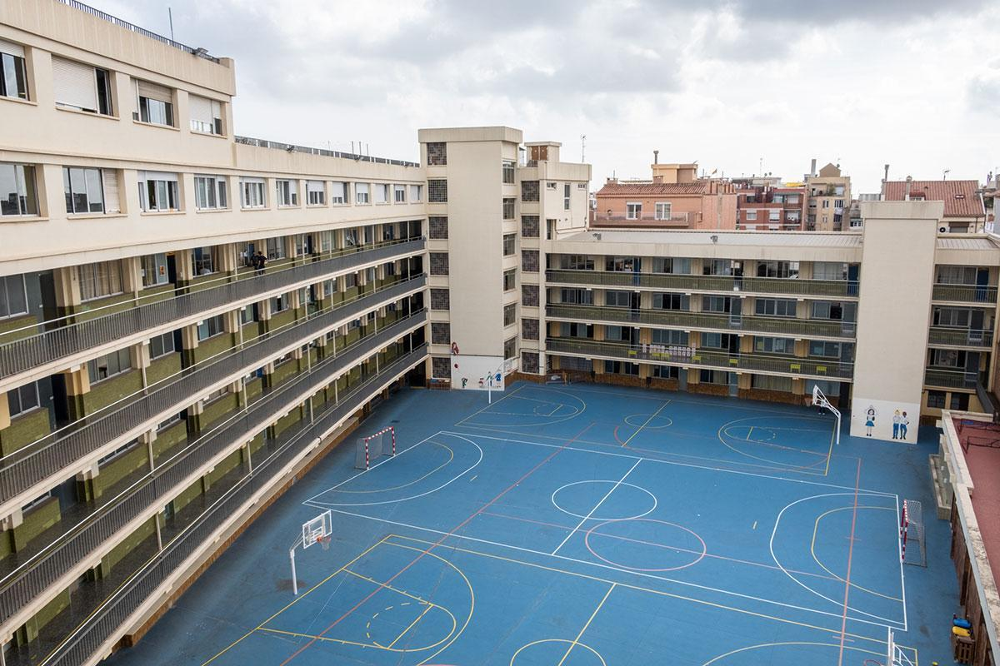

Educació
-
 ESO i Batxillerat
ESO i Batxillerat
Escola Maristes La Immaculada -

Grau Superior DAM
Desenvolupament d'Aplicacions Multiplataforma
Escola La Salle Gràcia
Sóc Marc Martí Sánchez, estudiant de Desenvolupament d’Aplicacions Multiplataforma (DAM) amb una gran passió per la programació i la creació de solucions tecnològiques. Estic en constant aprenentatge per ampliar els meus coneixements en diversos llenguatges de programació. El meu objectiu és seguir creixent i millorar contínuament en aquest sector, tant en habilitats tècniques com en capacitats de resolució de problemes.
Des de petit m’ha apassionat la tecnologia i tot el que envolta la programació. M'agrada afrontar nous reptes, explorar noves eines i aportar solucions innovadores en cada projecte. Em considero una persona creativa i proactiva, amb moltes ganes d’aprendre.
Com a estudiant en el camp del desenvolupament d’aplicacions, estic compromès amb el meu creixement professional, sempre cercant nous coneixements i millorant les meves capacitats per poder afrontar projectes més complexos. El meu objectiu és contribuir al món de la tecnologia amb solucions útils i eficients que puguin impactar positivament en els usuaris.
Corredor d'assegurances (NO OFICIAL) [ARGAMÓN/propietari únic] - [BARCELONA, ESPANYA] Tot I que aquesta experiència no va ser formalitzada, vaig poder comprendre millor la indústria d’assegurances i vaig poder desenvolupar habilitats de comunicació, negociació i avaluació de clients.
Després d’analitzar el meu perfil amb el DAFO, m’he adonat que, tot i que encara no tinc experiència laboral i sé que tinc coses a millorar, com la gestió del temps, també tinc fortaleses importants: sóc constant, m’agrada aprendre i estic motivat per continuar creixent.
A més, sé que estic en un moment ple d’oportunitats. El món de la programació no para de créixer, i puc fer pràctiques, projectes o conèixer gent del sector que m’ajudi a millorar cada dia.
A més, sé que estic en un moment ple d’oportunitats. El món de la programació no para de créixer, i puc fer pràctiques, projectes o conèixer gent del sector que m’ajudi a millorar cada dia.Aquest primer any del cicle de DAM m’ha servit molt per consolidar la base de programació, entendre com treballar en equip i també per conèixer com es mou el món tecnològic real. He tingut moments difícils, però també n’he après molt, i em sento més preparat per afrontar el segon any amb més seguretat i ganes.